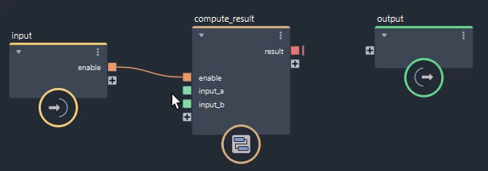
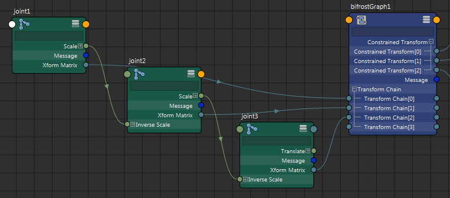
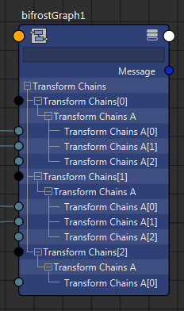

要在场景中输入或输出值，只需将它们连接到顶级图表的 input 或 output 节点。

Maya 的任何原生 Bifrost 类型均可作为图表输入或输出，包括布尔型、整型、浮点型、向量和矩阵。函数曲线等枚举和特殊类型的对象不受支持。
输入值会出现在 Maya 的“属性编辑器”(Attribute Editor)图表节点的“附加属性”(Extra Attributes)区域中。可以直接在“属性编辑器”(Attribute Editor)中输入值，或使用 Maya 的“节点编辑器”(Node Editor)连接输入。
要使用输出值，必须将其连接到“节点编辑器”(Node Editor)中的其他 Maya 节点。
如果需要，可以使用场景中的值数组作为图表的输入。例如，可以方便地将任意深度的层级表示为矩阵数组。
请注意，在 Maya 中，数组的最后一个端口是虚拟端口，允许您连接其他值。在以下示例中，输入数组的大小为 3。

通过在 Maya 的“节点编辑器”(Node Editor)中连接端口，可以采用相同的方式使用图表中的数组输出值。在某些情况下，虚拟输出可能显示为数组输出的最后一个元素 - 超出实际数组大小的端口值是该类型的默认值。
可以采用类似方式连接 2D 数组（数组的数组）和 3D 数组。同样，有虚拟端口允许新连接。以下示例显示具有两个数组的二维数组，其中每个数组包含两个元素。

树中需要额外级别，因为 Maya 本身不支持多维数组。